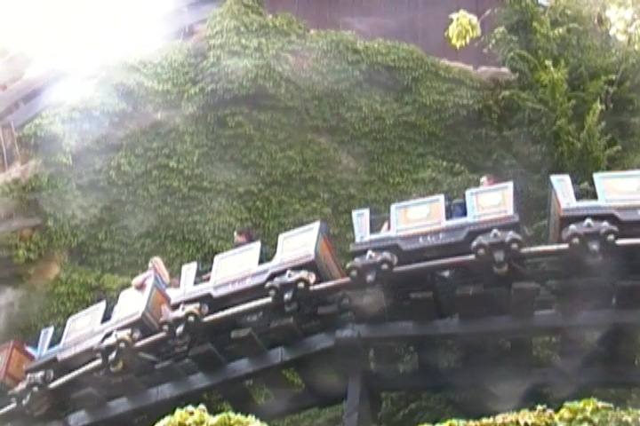

| |
Alpenexpress Review

We're here at Europa Park to ride Alpenexpress. You get in the cars and off you go. We go around a turn slowly, going through some straight track, accelerating gradually. No, the ride is not going downhill. This is a powered coaster, which may I once again remind you, is NOT a credit. We then turn and head into a downward helix, getting a great view of the beautiful theming of not only this ride, but just Europa Park in general. We then go in and TAKE THE TUNNEL!!! Inside the tunnel, where it almost seems to become an indoor powered not-a-coaster. We see some flashing lights, turn around, still inside and get more views of the pretty lights. We then head into an upward helix, except we're ACCELERATING here. You know this ride is defying gravity and the rules of roller coasters. But hey, it's fun. And the red lights really do enhance the experience. We come out of the tunnel, slow down, go around a turn, a small dip and into the station we go!!! And then we go again. Yep, we get two laps on this thing. It's a fun ride and MUCH better than most powered coasters, but in the region of great powered coasters, this is not the best one. But hey, now they have an even better powered coaster since I left. =)
5/10
Location: Europa Park
Opened: 1984
Built by: Mack
Last Ridden: June 25, 2012
Alpenexpress Photos

Home
|